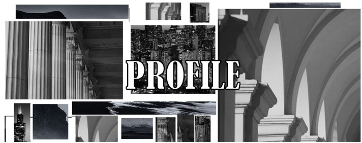

 Personal Information Name: Fatimah Abbasi Age: 20 years Nationality: Pakistani Pre-education and subjects followed during previous education: A level; Physics, and Chemistry About Me I was born and raised in Islamabad. Situated on the Potohar Plateau, Islamabad is Pakistan's capital and boasts a rich historical significance as one of Asia's earliest human settlement sites. Renowned for its breathtaking beauty, it ranks as the world's second most captivating capital city. The region experiences a humid subtropical climate, featuring a unique five-season pattern. Islamabad celebrated for its serenity, cleanliness, and stunning natural landscapes. The abundance of lush green spaces and tranquil surroundings make it truly unique. The city has notable landmarks, with the iconic Faisal Mosque, the fifth-largest mosque globally. Pakistan is a land that has unique cultures, magnificent landscapes, and enormous talents. I have volunteered at Al Huda International School, and at Mount Hira charity school for 4 years. I also have designed and conducted my own Summer camp. I am deeply passionate about sports. During, my school years, I was recognized as the Sports Student of the Year, and I also held leadership roles as the Vice-President and later as the President of the Sports Club in my high school. Extra-curricular Activities I derive great pleasure from engaging in various activities, including reading books, participating in online courses to expand my knowledge and broaden my perspective, hiking, cooking Pakistani cuisine (similar to Indian cuisine) and playing different sports. Not only helps me relax but also enhances my coordination and muscle control. Some of the sports I have played in the past are: Fencing Basketball Swimming Horse riding Dodgeball Wall Climbing Tennis Did you know? Arfa Karim was a Pakistani computer prodigy recognized as the youngest Microsoft Certified Professional (MCP) at the age of nine. The first computer virus is believed to have been designed and created in 1986 by a programmer from Pakistan named Basit Farooq Alvi, along with his brother Amjad Farooq Alvi.